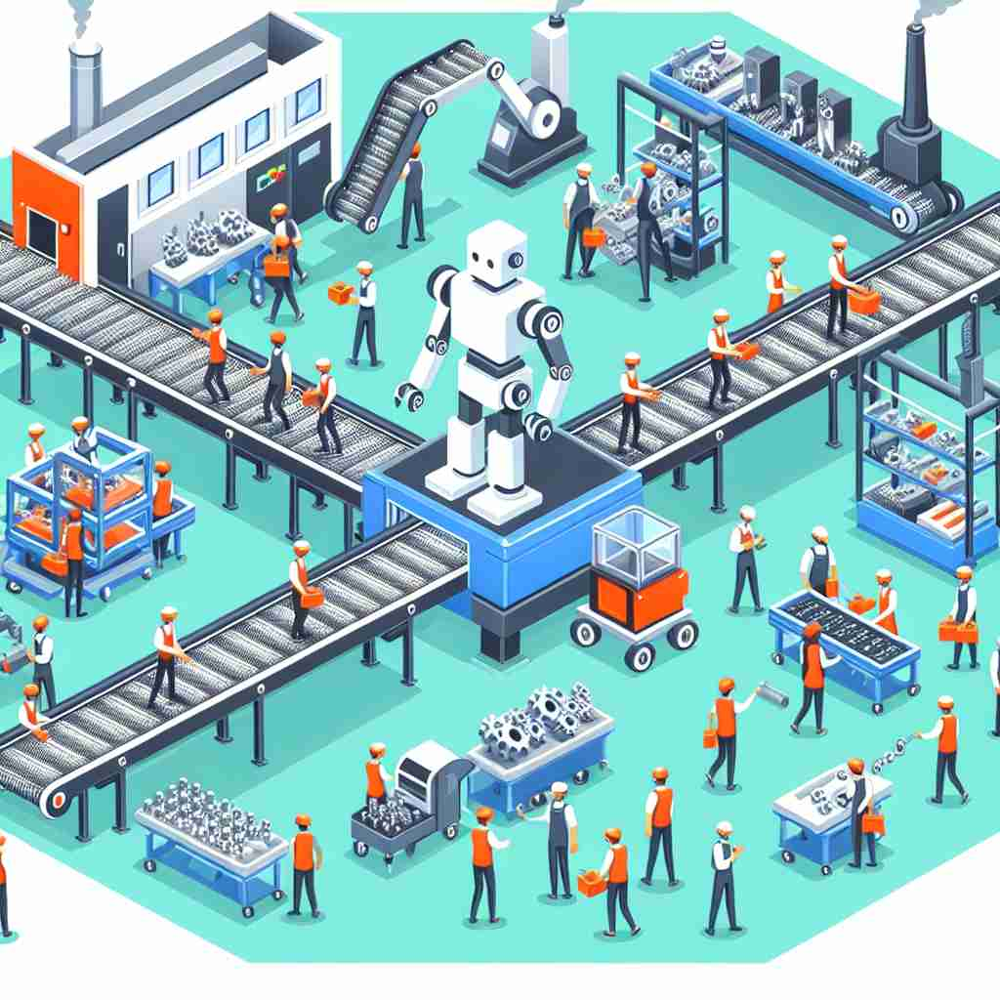

🗝️ n. the process of making or growing things to be sold
🖼️ 在一个大型工厂车间，机器正忙碌地运转。工人们穿着制服，专注地在流水线上组装产品。这里体现了'production'作为生产出售物品过程的含义。
🔍 想象'production'是一个工厂，核心意义是'制作过程'。从这个工厂可以生产出实物商品（数量），也可以'生产'出电影、节目等娱乐产品，甚至可以'生产'声音。所有的含义都围绕着'制作'这个核心概念展开，帮助你更容易理解和记忆这个词的多重含义。

💬 The factory is focused on car production using advanced technology.

💬 The farmer is involved in agricultural production by growing wheat.

💬 The workers are busy on the production line to create new products.

💬 The workers are busy on the production line, making products for sale.
🌳 由词根 "duct"（引导，拉出）加前缀 "pro-"（向前）和后缀 "-ion"（名词后缀）组成，表示 "生产，制造"。整体意思为向前引导或拉出某物的过程。
🗝️ n. the amount of something that is made or grown
🖼️ 在一个绿意盎然的田地里，农民站在成排的玉米前。他微笑着记录下今年丰收的产量，展示了'production'作为产量的含义。
💬 The annual rice production in this region has doubled.
❓ 从制作过程延伸到制作的结果
🗝️ n. the creation of a play, film, or program
🖼️ 在一个灯光璀璨的剧院中，导演站在舞台中央，与演员们讨论即将上演的话剧。这个场景展示了'production'作为戏剧或电影创作过程的含义。
💬 The production of the new Broadway musical cost millions of dollars.
❓ 将制作概念应用于娱乐行业
🗝️ n. a play, film, or program that is produced
🖼️ 电影院的银幕上播放着一部新上映的电影。观众们聚精会神地观看，显示出'production'作为已制作出的电影或节目本身的含义。
💬 Their latest production received excellent reviews from critics.
❓ 从制作过程进一步延伸到制作的最终产品
🗝️ n. the act of producing sound
🖼️ 在音乐录音室里，歌手戴着耳机，专注地唱歌。录音师在控制台前仔细调音，展示了'production'作为产生声音的行为的含义。
💬 Correct tongue placement is crucial for the production of certain phonemes.
❓ 将制作概念应用于声音领域